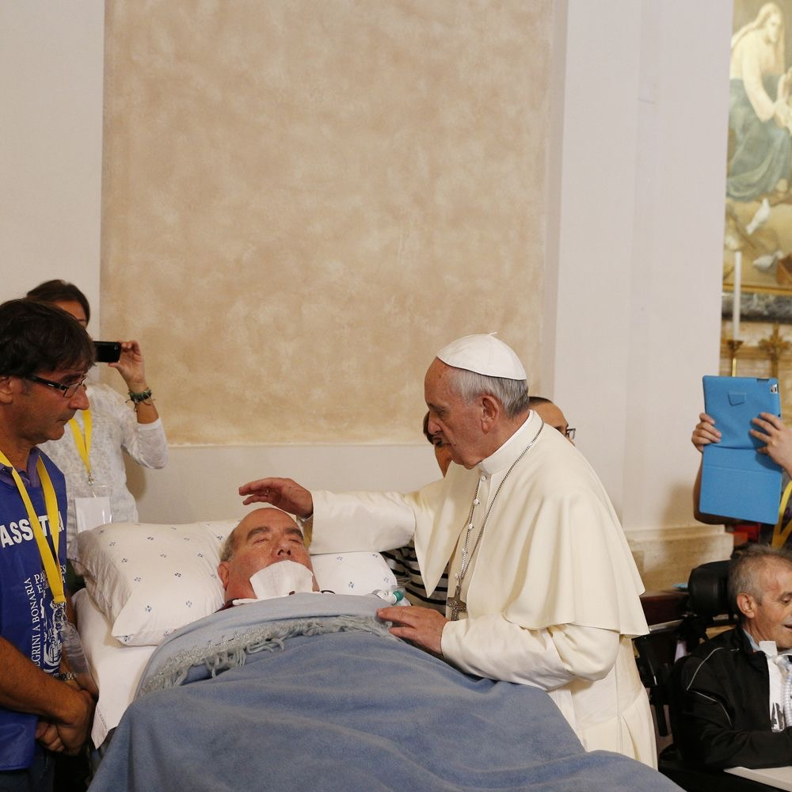

✦•┈๑⋅⋯Anointing of the sick⋯⋅๑┈•✦
It is the sacrament where Christ offers spiritual and physical healing to those whom are sick. Through the laying of hands and anointing with holy oil, the Church entrusts the sick people to Christ. It shows a compassionate encounter that promotes peace, hope, and strength to thos vulnerable. This sacrament encourages one to continue in Jesus’ ministry and show that God has deep care for those who are suffering. It reminds one that illness is not a punishment, but a way to feel and know God’s presence and mercy. It unites different individuals, symbolizing that thos whom are suffering are not alone in this journey.
₊˚⊹ ᰔMeaning & celebration₊˚⊹ ᰔ
The sacrament, Healing of the sick, is a gift of the Holy Spirit that tells one to always brings peace and courage to overcome the anxiety of having an illness. It prepares the soul for passing into eternal life, if the illness leads to death.
- Key sign: Oil of the Sick
- Effect: The sacrament offers spiritual strength, peace, courage, and a deeper union with Christ.
Why it matters: This sacrament is not merely a ceremony; it points to God’s action and invites the Christian community to respond with faith and love.

Short video
Learn more about Anointing of the sick.